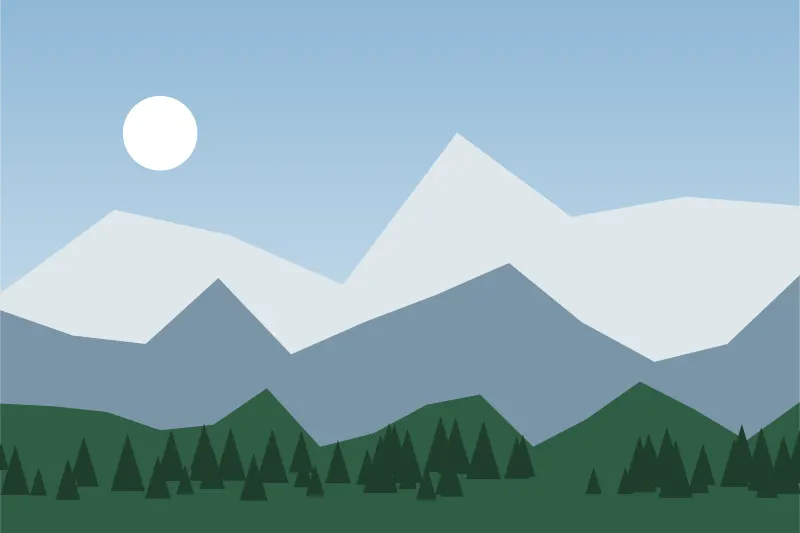
Most booked
Hampta Pass
Himachal Pradesh
Cross from the green Kullu valley into the stark, high desert of Lahaul, with an optional detour to Chandratal lake.
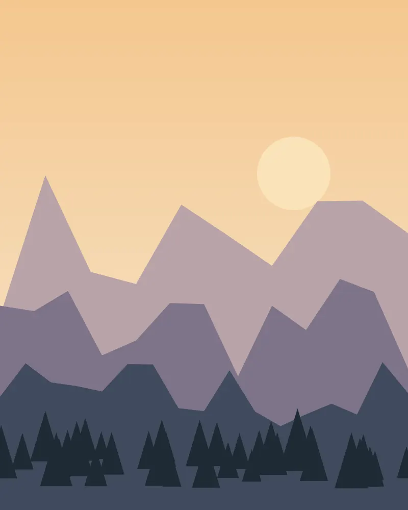
Himalayan treks · 2027 season
Small groups, certified mountain guides and routes we have walked every season for ten years. Pick a trek, bring your boots, and we handle the rest.
Why Northwind
Every group is led by a guide with mountaineering certification and wilderness first-aid training.
Smaller groups move at a steadier pace, camp lighter and leave less of a mark on the trail.
Routes above 4,000 m include a rest day, and guides check oxygen levels every evening.
All waste comes back down with us, and we hire porters and cooks from the villages we pass.
2027 departures
Five routes from gentle snow walks to high-altitude crossings. Prices are per person for a shared group.

Most booked
Himachal Pradesh
Cross from the green Kullu valley into the stark, high desert of Lahaul, with an optional detour to Chandratal lake.
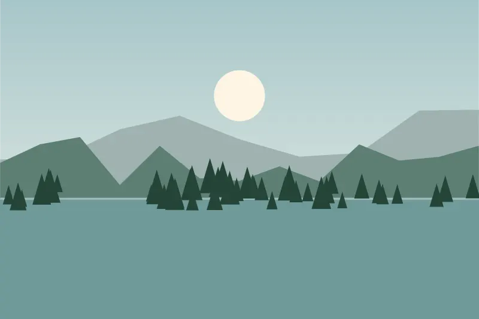
Kashmir
Meadow camps beside two alpine lakes in the Aru valley.
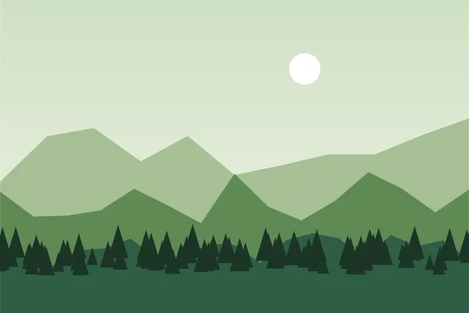
Uttarakhand
A classic winter summit through oak and pine forest.
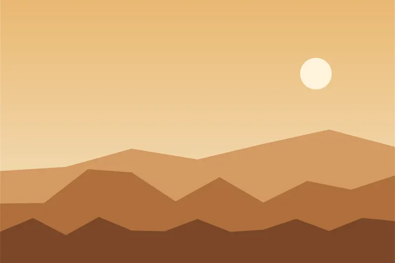
Himachal Pradesh
High desert villages, monasteries and a 4,550 m pass.
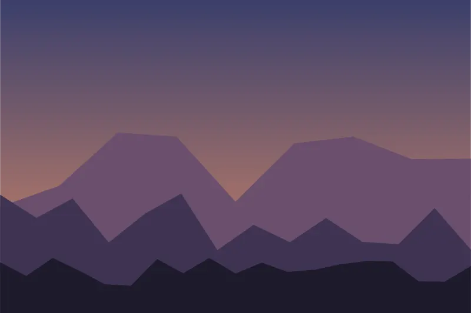
West Bengal
Ridge walk with views of four of the five highest peaks.
Sample itinerary
Distances are approximate and the order can change with the weather. Every day ends at a staffed camp with hot meals.
Day 1
3 km · camp at 3,100 m
A short first walk through maple forest to riverside meadows, so everyone can adjust to the altitude.
Day 2
9 km · camp at 3,600 m
Follow the Rani Nallah stream up the valley with a few easy river crossings.
Day 3
10 km · pass at 4,270 m
The big day: an early start, a steady climb to the pass, and a steep descent to Shea Goru.
Day 4
9 km · camp at 3,350 m
A gentle walk down through the bare, wide valleys of Lahaul.
Day 5
Drive · lake at 4,250 m
Weather permitting, a drive to Chandratal lake before returning to Manali in the evening.
Group options
Every option includes guides, permits, camping gear and all meals on the trail.
From ₹8,900 per person
Best for friends
From ₹12,400 per person
From ₹54,000 per group
From the trail
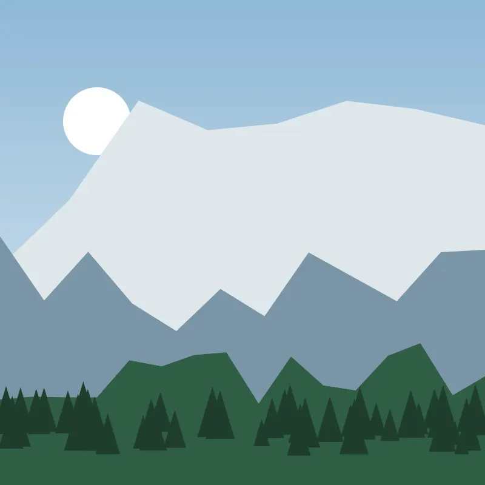
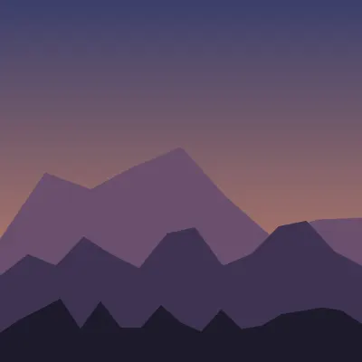
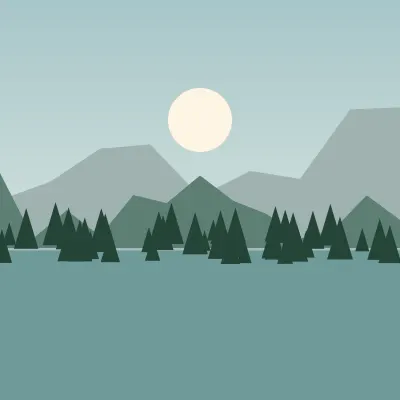
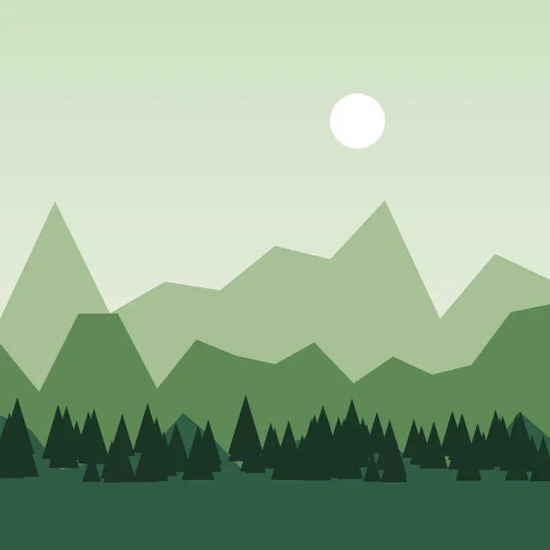
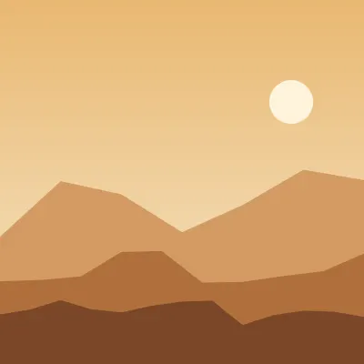
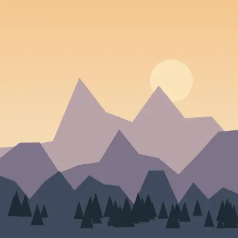
Trekker stories
“Our guide turned us around 200 metres below the pass when the weather closed in. We crossed the next morning instead. That decision is why I would book again.”
“First trek ever, and I never felt rushed. Six of us, two guides, and a cook who somehow made pakoras at 3,500 metres.”
“The packing list and fitness plan they sent a month before were genuinely useful. I arrived prepared and enjoyed every day.”
Before you book
Still unsure? Write to hello@northwindtrails.example and a trek leader will reply within a day.
For easy and moderate treks you should be able to walk 5 km in 40 minutes. We send a four-week preparation plan after you book.
Guides, permits, tents, sleeping bags, all meals on the trek and transport from the trailhead. Travel to the base town is not included.
Yes. Jackets, poles, gaiters and rucksacks can be rented at the base camp. Please bring your own broken-in boots.
The guide decides on the day. If a pass cannot be crossed safely we wait or take an alternative route; there is no refund for weather changes, but you can transfer to a later batch.
Tell us which trek and month you have in mind, and we will send dates, a packing list and a fitness plan.
Email a trek leader